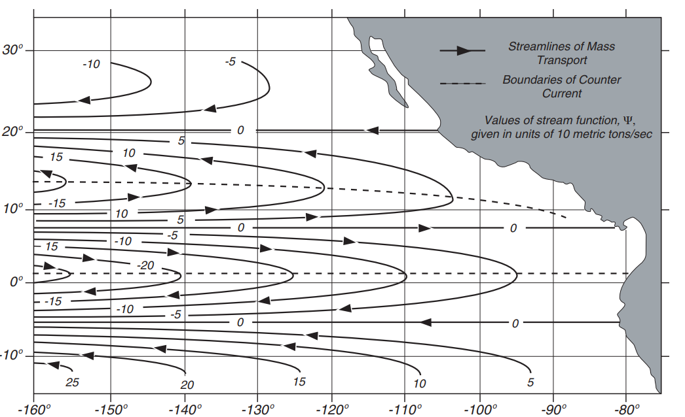
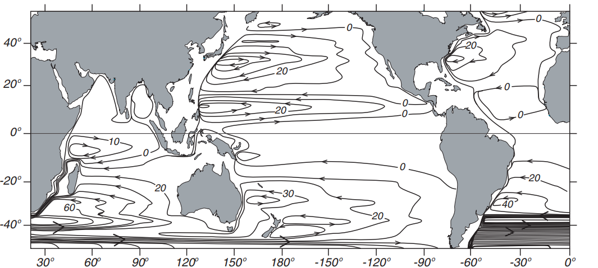

Streamlines of mass transport in the eastern Pacific calculated from Sverdrup’s theory using mean annual wind stress

Depth-integrated Sverdrup transport applied globally using the wind stress. Sverdrup solutions have been used for describing the global system of surface currents. The solutions are applied throughout each basin all the way to the western limit of the basin. There, conservation of mass is forced by including north-south currents confined to a thin, horizontal boundary layer.